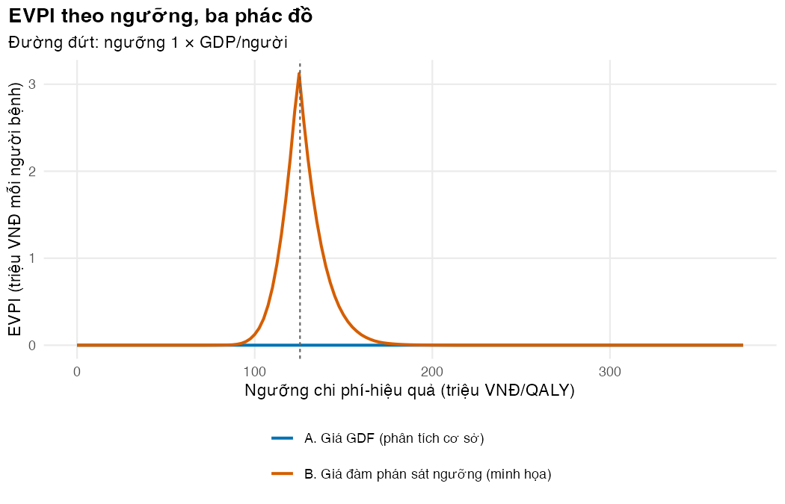
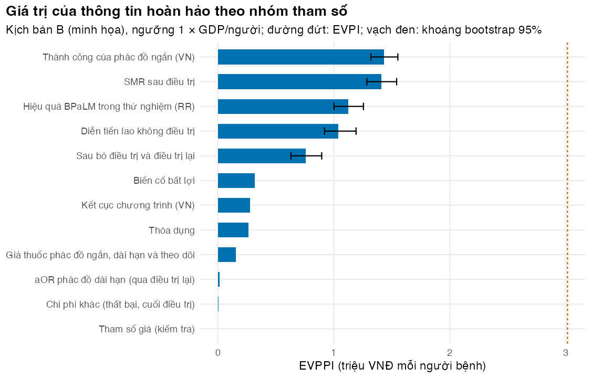

Có đáng thu thập thêm bằng chứng trước khi mở rộng BPaLM không, và nên nghiên cứu tham số nào?
Vì sao bạn nên quan tâm?
Năm 2024 Việt Nam phát hiện gần 4,000 người mắc lao kháng thuốc (Báo Đại biểu Nhân dân 2025). Trước khi mở rộng BPaLM ra cả nước, có nên bỏ tiền cho một nghiên cứu trong nước, chẳng hạn một đoàn hệ đo tỷ lệ thành công và tử vong của từng phác đồ, không? Với giá GDF, giá trị kỳ vọng của thông tin hoàn hảo là 0 VNĐ mỗi người bệnh: không nghiên cứu nào, dù hoàn hảo, đổi được quyết định chọn BPaLM. Nhưng nếu BPaLM phải mua ở giá sát ngưỡng (kịch bản B, giả định), thông tin hoàn hảo cho 10 năm đáng khoảng 106 tỷ VNĐ, bằng tiền thuốc của 14,929 đợt BPaLM giá GDF. Bài này dạy tính các con số đó, và đọc chúng đúng.
Mục tiêu học tập
Sau bài này, bạn có thể:
Giải thích giá trị kỳ vọng của thông tin hoàn hảo (expected value of perfect information, EVPI) và tính nó từ kết quả PSA cho hai hoặc ba chiến lược.
Tính EVPI quần thể (population EVPI) cho Việt Nam, nêu rõ giả định về số người bệnh và thời gian quyết định còn hiệu lực.
Ước lượng giá trị kỳ vọng của thông tin hoàn hảo cho một nhóm tham số (EVPPI) bằng mô hình cộng tính tổng quát (generalised additive model, GAM), kèm khoảng bootstrap, và kiểm tra ước lượng đó.
Giải thích giá trị kỳ vọng của thông tin mẫu (EVSI) và lợi ích ròng kỳ vọng của việc lấy mẫu (ENBS) bổ sung gì cho EVPPI.
Ý chính
Bất định chỉ có giá trị đối với quyết định khi nó có thể khiến ta chọn sai. Phân tích giá trị thông tin (value of information, VOI) đo giá trị đó bằng đơn vị của NMB (Claxton 1999; Fenwick và c.s. 2020).
\(\text{EVPI} = E_\theta[\max_s \text{NMB}_s(\theta)] - \max_s E_\theta[\text{NMB}_s(\theta)]\). Nó bằng tổn thất kỳ vọng của lựa chọn tối ưu (Bài 4). Một phương án không bao giờ thắng không đóng góp gì vào EVPI.
EVPI quần thể nhân EVPI với số người chịu ảnh hưởng trong thời gian quyết định còn hiệu lực, có chiết khấu. Nếu nó nhỏ hơn chi phí của mọi nghiên cứu khả thi, hãy quyết định ngay.
EVPPI của một nhóm tham số \(\phi\) cho biết nên ưu tiên nghiên cứu gì. Hồi quy NMB gia tăng theo \(\phi\) trên chính mẫu PSA cho ước lượng nhanh, không cần vòng lặp lồng nhau (Strong, Oakley, và Brennan 2014).
Khi biết cấu trúc mô hình, hồi quy theo một chỉ số dẫn xuất (ví dụ RR thay cho hai tỷ lệ của thử nghiệm) là chính xác và nhanh.
EVPI và EVPPI là kỳ vọng của một hàm max, nên nhiễu và chệch khi mẫu nhỏ: dùng mẫu PSA lớn, tính khoảng bootstrap, và chỉ xếp hạng khi khoảng không chồng lấn.
\(\text{EVPPI}(\phi) \leq \text{EVPI}\), EVPPI của các nhóm không cộng lại thành EVPI, và một “tham số giả” phải có EVPPI gần 0.
VOI chỉ tin cậy như phân phối đầu vào và cấu trúc mô hình; ở đây nó dùng để học phương pháp, không để xếp hạng ưu tiên nghiên cứu thật.
Nội dung
Giá trị của việc biết chắc: EVPI
Hôm nay ta phải chọn một chiến lược với thông tin hiện có, nên nhận \(\max_s E_\theta[\text{NMB}_s(\theta)]\). Nếu biết chắc giá trị thật của mọi tham số \(\theta\), ta sẽ chọn đúng chiến lược tốt nhất cho giá trị đó và nhận \(\max_s \text{NMB}_s(\theta)\). Vì chưa biết \(\theta\), giá trị kỳ vọng của việc biết chắc là trung bình của đại lượng này trên phân phối của \(\theta\). Hiệu số giữa hai đại lượng là EVPI:
Với hai chiến lược và NMB gia tăng \(\text{INB}_i\), công thức gọn lại thành \(E[\max(0, \text{INB})] - \max(0, E[\text{INB}])\) (evpi_inb()); với ba chiến lược, dùng evpi_nmb() trên ma trận NMB. EVPI bằng 0 khi một chiến lược thắng ở mọi lần chạy, và lớn nhất khi quyết định sát ngưỡng và đám mây PSA rộng (Wilson 2015).
EVPI quần thể
Một nghiên cứu mới giúp mọi người bệnh được điều trị trong suốt thời gian quyết định còn hiệu lực, không chỉ một người. Với \(n\) người mỗi năm, thời gian \(T\) năm và tỷ lệ chiết khấu \(r\):
Bài này dùng ba mức \(n\): khoảng 2,407 người được điều trị mỗi năm trong 2021–2022 (Nguyen và c.s. 2026), gần 4,000 ca lao kháng thuốc được phát hiện năm 2024 (Báo Đại biểu Nhân dân 2025), và 9,400 ca mắc mới ước tính của WHO (World Health Organization 2026), nếu phát hiện được hết. \(T\) = 10 năm là giá trị minh họa (khoảng 5–15 năm). Quyết định chỉ ảnh hưởng người đủ điều kiện dùng BPaLM, nên mọi con số dưới đây là cận trên theo số người.
EVPPI bằng hồi quy
Với một nhóm tham số \(\phi\) (phần còn lại là \(\psi\)),
Cách tính trực tiếp cần hai vòng lặp lồng nhau, tức hàng trăm nghìn lần chạy mô hình. Strong và cộng sự nhận ra rằng kỳ vọng bên trong, \(E[\text{INB} \mid \phi]\), chính là hàm hồi quy của INB theo \(\phi\). Vì vậy chỉ cần khớp một mô hình hồi quy trơn của INB theo \(\phi\) trên mẫu PSA đã có, rồi thay INB bằng giá trị khớp \(\hat g(\phi_i)\)(Strong, Oakley, và Brennan 2014):
Công thức này cho hai chiến lược; với ba chiến lược, cần khớp một hồi quy cho mỗi NMB gia tăng. Ở đây phác đồ dài hạn không bao giờ thắng (Bài 4), nên EVPI ba chiến lược bằng EVPI hai chiến lược và dùng INB của BPaLM so với phác đồ ngắn là đủ; đoạn mã kiểm tra điều đó. GAM trong mgcv là lựa chọn mặc định, làm trơn bằng REML (Wood 2011): s(x) cho một tham số, te() (tích tensor, giữ tương tác) cho hai hoặc ba tham số; nhóm lớn hơn nên dùng quá trình Gauss hoặc các phương pháp trong báo cáo của ISPOR (Rothery và c.s. 2020). Khi biết cấu trúc, hồi quy theo một chỉ số dẫn xuất: M02 chỉ dùng hai tỷ lệ của thử nghiệm qua tỷ số RR, và bốn tham số biến cố bất lợi tác động lên INB qua một tổ hợp duy nhất, nên một spline một chiều là chính xác. Luôn chạy hai phép thử âm tính: EVPPI không vượt EVPI, và một tham số giả có EVPPI gần 0.
EVSI: giá trị của một nghiên cứu cụ thể
flowchart TB A["EVPI<br/>biết chắc mọi tham số"] --> B["EVPPI(φ)<br/>biết chắc nhóm φ"] B --> C["EVSI(φ, n)<br/>một nghiên cứu cỡ mẫu n đo φ"] C --> D["ENBS = EVSI quần thể − chi phí nghiên cứu<br/>chọn thiết kế và cỡ mẫu có ENBS lớn nhất"]
flowchart TB
A["EVPI<br/>biết chắc mọi tham số"] --> B["EVPPI(φ)<br/>biết chắc nhóm φ"]
B --> C["EVSI(φ, n)<br/>một nghiên cứu cỡ mẫu n đo φ"]
C --> D["ENBS = EVSI quần thể − chi phí nghiên cứu<br/>chọn thiết kế và cỡ mẫu có ENBS lớn nhất"]
Không nghiên cứu nào cho thông tin hoàn hảo. EVSI hỏi: một nghiên cứu cụ thể, ví dụ một đoàn hệ theo dõi \(n\) người bệnh dùng phác đồ ngắn tại các tỉnh, đáng giá bao nhiêu? EVSI tăng theo \(n\) và tiệm cận EVPPI của các tham số mà nghiên cứu đo (Ades, Lu, và Claxton 2004). Trừ chi phí nghiên cứu (tăng theo \(n\)) khỏi EVSI quần thể được ENBS; thiết kế tốt nhất có ENBS lớn nhất. Tính EVSI cần mô hình hóa dữ liệu của nghiên cứu tương lai; bốn phương pháp xấp xỉ được so sánh trong hướng dẫn của Kunst và cộng sự (Kunst và c.s. 2020), và gói R voi cài đặt nhiều phương pháp trong số đó (Jackson và Heath 2024).
Thực hành
Chạy PSA cho kịch bản B với 1,000 lần (mẫu nhỏ, như Bài 3–4), rồi chạy cả hai kịch bản với 5,000 lần bằng run_psa_vec() (mẫu lớn dùng cho VOI). Kiểm tra: bản vectơ hóa trùng vòng lặp run_cea() ở năm lần chạy đầu (stopifnot).
# Vietnamese text in figures needs a UTF-8 locale (Rscript may start in the "C" locale)if (!isTRUE(l10n_info()[["UTF-8"]])) invisible(Sys.setlocale("LC_CTYPE", "en_US.UTF-8"))source("../_shared/R/helpers.R")source("../_shared/R/vn_data.R")source("code/model.R")library(ggplot2)suppressPackageStartupMessages(library(mgcv))inp <-load_m03_inputs()p <- inp$pspec <- inp$specu <- inp$uctx <- inp$ctxctab <-attr(ctx, "table")utab <-attr(u, "table")fit <-fit_dist(spec)price_hi <-price_scenario(p, u$price_round)# Small sample (Lessons 3-4): n_psa runs, scenario B (negotiated price near the threshold)draws_1k <-draw_psa(fit, n = u$n_psa, seed = u$seed)psa_b_1k <-run_psa_vec(p, draws_1k, fixed =list(c_drug_bpalm = price_hi))inb_b_1k <-psa_incremental(psa_b_1k, p$wtp)$d_nmb# Large sample for value of information: n_psa_voi runs with the vectorised model (Lesson 3).# EVPI and EVPPI are expectations of a maximum, so they need more runs than a mean does.draws <-draw_psa(fit, n = u$n_psa_voi, seed = u$seed)psa_a <-run_psa_vec(p, draws) # A: GDF pricepsa_b <-run_psa_vec(p, draws, fixed =list(c_drug_bpalm = price_hi)) # B: negotiated priceinb_a <-psa_incremental(psa_a, p$wtp)$d_nmb # BPaLM minus shortinb_b <-psa_incremental(psa_b, p$wtp)$d_nmb# the vectorised runs agree with the loop of M02 run_cea() for the first 5 drawschk_loop <-run_psa(p, draws[1:5, ], fixed =list(c_drug_bpalm = price_hi), cores =1)stopifnot(max(abs(as.matrix(psa_b[1:5, ]) /as.matrix(chk_loop) -1)) <1e-8)c(n_small =length(inb_b_1k), n_large =length(inb_b))
n_small n_large
1000 5000
Tính EVPI hai và ba chiến lược cho hai kịch bản, rồi EVPI theo ngưỡng. Kiểm tra: EVPI không âm; EVPI ba chiến lược không nhỏ hơn EVPI hai chiến lược, và bằng nhau khi phác đồ dài hạn không bao giờ thắng (stopifnot).
# Two-strategy EVPI (BPaLM vs short) and three-strategy EVPI (all regimens)evpi <-c(A =evpi_inb(inb_a), B =evpi_inb(inb_b))evpi3 <-c(A =evpi_nmb(nmb_matrix(psa_a, p$wtp)), B =evpi_nmb(nmb_matrix(psa_b, p$wtp)))evpi_1k <-evpi_inb(inb_b_1k)# Does the long regimen ever have the highest NMB? If never, it cannot add any value of information.long_wins <-c(A =mean(max.col(nmb_matrix(psa_a, p$wtp)) ==1), B =mean(max.col(nmb_matrix(psa_b, p$wtp)) ==1))stopifnot(colnames(nmb_matrix(psa_a, p$wtp))[1] =="long")round(rbind(evpi_2_strategies = evpi, evpi_3_strategies = evpi3, long_optimal_share = long_wins) /c(1e6, 1e6, 1), 3)
A B
evpi_2_strategies 0 3.012
evpi_3_strategies 0 3.012
long_optimal_share 0 0.000
round(c(B_with_1000_runs = evpi_1k /1e6), 3)
B_with_1000_runs
3.06
stopifnot(all(evpi >=0), evpi[["B"]] > evpi[["A"]], all(evpi3 >= evpi -1))if (all(long_wins ==0)) stopifnot(max(abs(evpi3 - evpi)) <1) # exactly equal then# EVPI across thresholds for both scenarios (0 to 3 x GDP per capita)wtp_grid <-sort(unique(c(seq(0, ctab$high[ctab$name =="wtp"], by =2.5e6), p$wtp)))evpi_curve <-NULLfor (w in wtp_grid) { evpi_curve <-rbind(evpi_curve, data.frame(wtp = w,A =evpi_nmb(nmb_matrix(psa_a, w)),B =evpi_nmb(nmb_matrix(psa_b, w))))}lab_a <-"A. Giá GDF (phân tích cơ sở)"lab_b <-"B. Giá đàm phán sát ngưỡng (minh họa)"evpi_long <-rbind(data.frame(scenario = lab_a, wtp = evpi_curve$wtp, evpi = evpi_curve$A),data.frame(scenario = lab_b, wtp = evpi_curve$wtp, evpi = evpi_curve$B))fig_evpi <-ggplot(evpi_long, aes(wtp /1e6, evpi /1e6, colour = scenario)) +geom_line(linewidth =0.9) +geom_vline(xintercept = p$wtp /1e6, linetype ="22", colour ="grey40") +scale_colour_manual(values = pal_course[c(1, 2)], name =NULL) +labs(x ="Ngưỡng chi phí-hiệu quả (triệu VNĐ/QALY)", y ="EVPI (triệu VNĐ mỗi người bệnh)",title ="EVPI theo ngưỡng, ba phác đồ", subtitle ="Đường đứt: ngưỡng 1 × GDP/người") +guides(colour =guide_legend(nrow =2)) +theme_course()save_fig(fig_evpi, "l05-evpi.png", width =7, height =4.5)wtp_evpi_max <- evpi_curve$wtp[which.max(evpi_curve$B)]max_evpi_a <-max(evpi_curve$A)

EVPI theo ngưỡng
Trong kịch bản A, EVPI là 0 VNĐ ở 1 × GDP/người và bằng 0 ở mọi ngưỡng trên hình. Trong kịch bản B, EVPI là 3.01 triệu VNĐ mỗi người bệnh, và đường EVPI đạt đỉnh quanh 125.0 triệu VNĐ/QALY, nơi quyết định sát nhất. Phác đồ dài hạn không thắng ở lần chạy nào, nên EVPI ba chiến lược bằng đúng EVPI hai chiến lược. Với 1,000 lần chạy, EVPI của B là 3.06 triệu VNĐ: EVPI ít nhạy với cỡ mẫu. EVPPI nhạy với cỡ mẫu hơn, như dưới đây.
Nhân với số người bệnh chịu ảnh hưởng. Kiểm tra: với một năm, số người có chiết khấu bằng đúng số người mỗi năm; EVPI quần thể tăng theo thời gian và theo số người (stopifnot).
# People affected each year (low, base, high of params/uncertainty.csv), assumed constant,# over the lifetime of the decision (low, base, high), discounted at the shared ratenrow_u <-function(k) utab[utab$name == k, ]people <-c(low =nrow_u("n_year_affected")$low, base = u$n_year_affected, high =nrow_u("n_year_affected")$high)yrs <-c(low =nrow_u("voi_years")$low, base = u$voi_years, high =nrow_u("voi_years")$high)pop_tab <-data.frame(years = yrs)for (k innames(people)) { pop_tab[[paste0("people_", k)]] <-vapply(yrs, function(y) evpi[["B"]] *pop_factor(people[[k]], y, p$disc_rate), 0) /1e9}knitr::kable(pop_tab, digits =c(0, 1, 1, 1), row.names =FALSE,col.names =c("Thời gian quyết định còn hiệu lực (năm)",paste0("EVPI quần thể B, ", fmt_num(people), " người/năm (tỷ VNĐ)")))
Với 4,000 người mỗi năm trong 10 năm, EVPI quần thể của kịch bản B là 105.9 tỷ VNĐ, bằng tiền thuốc của khoảng 14,929 đợt BPaLM giá GDF: mức trần cho tổng giá trị của mọi nghiên cứu nhằm giảm bất định của quyết định này. Bảng cho thấy con số này thay đổi 10 lần giữa giả định thấp nhất và cao nhất về số người và thời gian; hai giả định đó cần được nêu rõ cạnh con số. Trong kịch bản A con số đó là 0.0 tỷ VNĐ, nên với giá GDF, không nghiên cứu nào đáng làm chỉ để quyết định có dùng BPaLM thay phác đồ ngắn hay không. Nghiên cứu vẫn có thể cần vì lý do khác, như theo dõi an toàn hoặc kháng bedaquiline.
Ước lượng EVPPI cho từng nhóm tham số bằng GAM. Hai nhóm dùng chỉ số dẫn xuất; đoạn mã kiểm tra trước, trên 20 lần rút, rằng INB đổi đúng bằng chỉ số biến cố bất lợi, và không đổi khi hai tỷ lệ của thử nghiệm đổi mà RR giữ nguyên. Kiểm tra: không nhóm nào vượt EVPI (cho phép 2% sai số ước lượng), và tham số giả có EVPPI dưới 1% EVPI (stopifnot).
# Groups of parameters that one study could measure. In scenario B the BPaLM price is fixed,# so it is not a group. Two groups use a DERIVED INDEX (one variable, exact):# - trial effect: M02 uses the two trial proportions only through their ratio (RR);# - adverse events: the four parameters act on INB through# (ae_soc - ae_bpalm) x (lambda x d_ae x dur_ae / 12 + hospital cost in VND).groups <-list("Hiệu quả BPaLM trong thử nghiệm (RR)"=c("unf_bpalm_trial", "unf_soc_trial"),"Thành công của phác đồ ngắn (VN)"="short_success","Kết cục chương trình (VN)"=c("vn_failure", "vn_death", "vn_ltfu"),"Biến cố bất lợi"=c("ae_bpalm", "ae_soc", "d_ae", "c_hosp_usd"),"Diễn tiến lao không điều trị"=c("cf_untreated", "dur_untreated"),"Sau bỏ điều trị và điều trị lại"=c("ltfu_mort_rate", "retx_rate_ltfu", "retx_rate_failed"),"SMR sau điều trị"="smr_post","Thỏa dụng"=c("u_tb", "u_post"),"Giá thuốc phác đồ ngắn, dài hạn và theo dõi"=c("c_drug_short", "c_drug_long", "c_monitor"),"Chi phí khác (thất bại, cuối điều trị)"=c("c_failed", "c_eot"),"aOR phác đồ dài hạn (qua điều trị lại)"="aor_long_vs_bdqstr")g_rr <-"Hiệu quả BPaLM trong thử nghiệm (RR)"g_ae <-"Biến cố bất lợi"stopifnot(setequal(unlist(groups), setdiff(fit$name, c("vn_success", "vn_not_eval", "c_drug_bpalm"))))index_ae <-function(d) { (d$ae_soc - d$ae_bpalm) * (d$d_ae * p$dur_ae /12* p$wtp + d$c_hosp_usd * p$fx_vnd_usd * p$hosp_inflator)}index_rr <-function(d) d$unf_bpalm_trial / d$unf_soc_trial# Check both identities on 20 draws: change only the group's parameters (price fixed at B)p_b <- p; p_b$c_drug_bpalm <- price_hilhs <- rhs <- same_rr <-numeric(20)base_ae <-as.data.frame(p[groups[[g_ae]]])for (i in1:20) { q <- p_bfor (k in groups[[g_ae]]) q[[k]] <- draws[[k]][i] lhs[i] <-d_nmb(q) -d_nmb(p_b) rhs[i] <-index_ae(draws[i, groups[[g_ae]]]) -index_ae(base_ae)# same RR, different proportions: same INB q1 <- p_b; q1$unf_bpalm_trial <- draws$unf_bpalm_trial[i]; q1$unf_soc_trial <- draws$unf_soc_trial[i] q2 <- q1; q2$unf_bpalm_trial <-0.5* q1$unf_bpalm_trial; q2$unf_soc_trial <-0.5* q1$unf_soc_trial same_rr[i] <-d_nmb(q1) -d_nmb(q2)}stopifnot(max(abs(lhs - rhs)) <1e-3, max(abs(same_rr)) <1e-3) # 0.001 VNDgroup_X <-function(g, d) {if (g == g_ae) return(data.frame(index_ae =index_ae(d)))if (g == g_rr) return(data.frame(rr =index_rr(d))) d[groups[[g]]]}method_of <-function(g) {if (g %in%c(g_ae, g_rr)) "chỉ số dẫn xuất, s()"elseif (length(groups[[g]]) ==1) "s()"else"te()"}# A dummy 'parameter' that the model never uses: its EVPPI should be about zeroset.seed(u$seed)draws$dummy <-runif(nrow(draws))draws_1k$dummy <-runif(nrow(draws_1k))g_dummy <-"Tham số giả (kiểm tra)"groups[[g_dummy]] <-"dummy"evppi_tab <-data.frame(group =names(groups), n_par =lengths(groups),method =vapply(names(groups), method_of, ""), evppi =NA, r2 =NA, sd_fitted =NA,evppi_1k =NA)for (i inseq_along(groups)) { g <-names(groups)[i] res <-evppi_gam(inb_b, group_X(g, draws)) evppi_tab$evppi[i] <- res[["evppi"]] evppi_tab$r2[i] <- res[["r2"]] evppi_tab$sd_fitted[i] <- res[["sd_fitted"]] evppi_tab$evppi_1k[i] <-evppi_gam(inb_b_1k, group_X(g, draws_1k))[["evppi"]]}evppi_tab$share_of_evpi <- evppi_tab$evppi / evpi[["B"]]evppi_tab$pop_billion <- evppi_tab$evppi * pf_base /1e9evppi_tab <- evppi_tab[order(evppi_tab$evppi, decreasing =TRUE), ]rownames(evppi_tab) <-NULL# Checks: no group is worth more than all parameters together; the dummy is worth ~0stopifnot(all(evppi_tab$evppi <= evpi[["B"]] *1.02), evppi_tab$evppi[evppi_tab$group == g_dummy] <0.01* evpi[["B"]])round(setNames(evppi_tab$evppi /1e6, evppi_tab$group), 2)
Thành công của phác đồ ngắn (VN)
1.43
SMR sau điều trị
1.41
Hiệu quả BPaLM trong thử nghiệm (RR)
1.13
Diễn tiến lao không điều trị
1.04
Sau bỏ điều trị và điều trị lại
0.76
Biến cố bất lợi
0.32
Kết cục chương trình (VN)
0.28
Thỏa dụng
0.27
Giá thuốc phác đồ ngắn, dài hạn và theo dõi
0.15
aOR phác đồ dài hạn (qua điều trị lại)
0.02
Chi phí khác (thất bại, cuối điều trị)
0.01
Tham số giả (kiểm tra)
0.00
Hồi quy thông thường có kém hơn chỉ số dẫn xuất không? Bảng sau so hai cách cho hai nhóm, ở mẫu nhỏ và mẫu lớn.
# How good are the regressions for groups of several parameters? For the adverse-event group,# compare an additive model of separate smooths s(x1) + ... + s(x4) with the exact derived index,# at the small and the large sample. The same for the trial pair: te() on the two# proportions versus s() on their ratio.chk_groups <-c(g_ae, g_rr)est_tab <-data.frame(group = chk_groups, naive_method =c("4 × s() cộng tính", "te() hai tỷ lệ"),naive_1k =NA, index_1k =NA, naive_large =NA, index_large =NA)for (i inseq_along(chk_groups)) { g <- chk_groups[i] add <- g == g_ae est_tab$naive_1k[i] <-evppi_gam(inb_b_1k, draws_1k[groups[[g]]], additive = add)[["evppi"]] /1e6 est_tab$naive_large[i] <-evppi_gam(inb_b, draws[groups[[g]]], additive = add)[["evppi"]] /1e6 est_tab$index_1k[i] <- evppi_tab$evppi_1k[evppi_tab$group == g] /1e6# computed above est_tab$index_large[i] <- evppi_tab$evppi[evppi_tab$group == g] /1e6}knitr::kable(est_tab, digits =2, row.names =FALSE,col.names =c("Nhóm", "Cách hồi quy thông thường", "Thông thường, N nhỏ", "Chỉ số dẫn xuất, N nhỏ","Thông thường, N lớn", "Chỉ số dẫn xuất, N lớn"))
Nhóm
Cách hồi quy thông thường
Thông thường, N nhỏ
Chỉ số dẫn xuất, N nhỏ
Thông thường, N lớn
Chỉ số dẫn xuất, N lớn
Biến cố bất lợi
4 × s() cộng tính
0.23
0.22
0.32
0.32
Hiệu quả BPaLM trong thử nghiệm (RR)
te() hai tỷ lệ
1.13
1.12
1.13
1.13
# Gap of the usual regression relative to the index estimate at the large N, by sample sizeover_1k <- est_tab$naive_1k / est_tab$index_large -1over_large <- est_tab$naive_large / est_tab$index_large -1names(over_1k) <-names(over_large) <- est_tab$groupround(rbind(small_n = over_1k, large_n = over_large), 2)
Biến cố bất lợi Hiệu quả BPaLM trong thử nghiệm (RR)
small_n -0.26 0.01
large_n 0.02 0.00
# At the small N: how far apart are the two methods, and how far are both from the large-N estimate?gap_methods_1k <-max(abs(est_tab$naive_1k / est_tab$index_1k -1))gap_n_1k <-max(abs(c(est_tab$naive_1k, est_tab$index_1k) /rep(est_tab$index_large, 2) -1))round(c(gap_methods_small_n = gap_methods_1k, gap_to_large_n = gap_n_1k), 2)
gap_methods_small_n gap_to_large_n
0.05 0.30
Ở 5,000 lần chạy, hai cách lệch nhau tối đa 2%. Ở 1,000 lần, hai cách lệch nhau tối đa 5%, nhưng đều lệch so với ước lượng của mẫu lớn tới 30%: ở đây sai lệch chủ yếu do mẫu nhỏ, không do cách hồi quy. Chỉ số dẫn xuất vẫn đáng dùng: nó đúng theo cấu trúc, nhanh hơn, và không cần chọn số hàm cơ sở.
Khoảng bootstrap cho các nhóm có thể đứng đầu, rồi xếp bậc. Hai nhóm cùng bậc khi khoảng của chúng chồng lấn lên giới hạn dưới của nhóm cao hơn, nghĩa là mẫu này chưa cho phép xếp hạng giữa chúng. Kiểm tra: ước lượng điểm nằm trong khoảng của chính nó (stopifnot).
# Bootstrap the PSA rows for the groups that could be ranked first: those with an EVPPI of# at least half the largest one (the dummy excluded). n_boot resamples each.cand <- evppi_tab$group[evppi_tab$evppi >=0.5*max(evppi_tab$evppi) & evppi_tab$group != g_dummy]evppi_tab$lo <-NA_real_; evppi_tab$hi <-NA_real_for (j inseq_along(cand)) { b <-evppi_boot(inb_b, group_X(cand[j], draws), n_boot = u$n_boot, seed = u$seed +10* j) evppi_tab$lo[evppi_tab$group == cand[j]] <-quantile(b, 0.025, names =FALSE) evppi_tab$hi[evppi_tab$group == cand[j]] <-quantile(b, 0.975, names =FALSE)}shown <-transform(evppi_tab, evppi = evppi /1e6,ci =ifelse(is.na(lo), "", paste0(fmt_num(lo /1e6, 2), "–", fmt_num(hi /1e6, 2))))knitr::kable(shown[, c("group", "n_par", "method", "evppi", "ci", "r2", "share_of_evpi", "pop_billion")],digits =c(0, 0, 0, 2, 0, 2, 2, 1), row.names =FALSE,col.names =c("Nhóm tham số", "Số tham số", "Cách ước lượng", "EVPPI (triệu VNĐ/người)","Khoảng bootstrap 95%", "R² của GAM", "Tỷ lệ so với EVPI", "EVPPI quần thể (tỷ VNĐ)"))
Nhóm tham số
Số tham số
Cách ước lượng
EVPPI (triệu VNĐ/người)
Khoảng bootstrap 95%
R² của GAM
Tỷ lệ so với EVPI
EVPPI quần thể (tỷ VNĐ)
Thành công của phác đồ ngắn (VN)
1
s()
1.43
1.32–1.55
0.26
0.48
50.4
SMR sau điều trị
1
s()
1.41
1.28–1.54
0.25
0.47
49.5
Hiệu quả BPaLM trong thử nghiệm (RR)
2
chỉ số dẫn xuất, s()
1.13
1.00–1.25
0.17
0.37
39.6
Diễn tiến lao không điều trị
2
te()
1.04
0.92–1.19
0.14
0.34
36.5
Sau bỏ điều trị và điều trị lại
3
te()
0.76
0.63–0.90
0.09
0.25
26.5
Biến cố bất lợi
4
chỉ số dẫn xuất, s()
0.32
0.02
0.11
11.1
Kết cục chương trình (VN)
3
te()
0.28
0.02
0.09
9.8
Thỏa dụng
2
te()
0.27
0.02
0.09
9.3
Giá thuốc phác đồ ngắn, dài hạn và theo dõi
3
te()
0.15
0.01
0.05
5.4
aOR phác đồ dài hạn (qua điều trị lại)
1
s()
0.02
0.00
0.01
0.6
Chi phí khác (thất bại, cuối điều trị)
2
te()
0.01
0.00
0.00
0.2
Tham số giả (kiểm tra)
1
s()
0.00
0.00
0.00
0.0
# Rank tiers. Groups are taken in order of EVPPI; a group joins the tier of the best group not# yet placed if its upper bound reaches that group's lower bound (intervals overlap). Groups in# the same tier cannot be ranked against each other with this sample.cand_tab <- evppi_tab[!is.na(evppi_tab$hi), ]tier <-rep(NA_integer_, nrow(cand_tab))k <-0for (i inseq_len(nrow(cand_tab))) {if (!is.na(tier[i])) next k <- k +1for (j in i:nrow(cand_tab)) {if (is.na(tier[j]) && cand_tab$hi[j] >= cand_tab$lo[i]) tier[j] <- k }}cand_tab$tier <- tiertop_group <- evppi_tab$group[1]stopifnot(!anyNA(tier), cand_tab$group[1] == top_group,all(cand_tab$lo <= cand_tab$evppi), all(cand_tab$hi >= cand_tab$evppi))# Which kinds of range stand behind each candidate group?range_kinds <-function(g) unique(RANGE_TYPE_LABELS[spec$range_type[match(groups[[g]], spec$name)]])cand_tab$basis <-vapply(cand_tab$group, function(g) paste(range_kinds(g), collapse ="; "), "")cand_tab$on_ci95 <-vapply(cand_tab$group, function(g) any(spec$range_type[match(groups[[g]], spec$name)] =="ci95"), TRUE)knitr::kable(cand_tab[, c("group", "tier", "basis")], row.names =FALSE,col.names =c("Nhóm", "Bậc xếp hạng", "Loại khoảng bất định của các tham số trong nhóm"))
Nhóm
Bậc xếp hạng
Loại khoảng bất định của các tham số trong nhóm
Thành công của phác đồ ngắn (VN)
1
phân vị 2.5-97.5% (cỡ mẫu giả định)
SMR sau điều trị
1
KTC 95% mượn từ nghiên cứu khác
Hiệu quả BPaLM trong thử nghiệm (RR)
2
phân vị 2.5-97.5% (từ số đếm)
Diễn tiến lao không điều trị
2
khoảng giữa các nghiên cứu; khoảng minh họa
Sau bỏ điều trị và điều trị lại
3
KTC 95% công bố; phân vị 2.5-97.5% (từ số đếm); khoảng minh họa
# Ranking with the small sample, for comparisonrank_small <- evppi_tab$group[order(evppi_tab$evppi_1k, decreasing =TRUE)][1:3]rank_large <- evppi_tab$group[1:3]c(n_candidates =nrow(cand_tab), n_tiers =max(tier), candidates_on_published_ci =sum(cand_tab$on_ci95))
Nhóm đứng đầu là “Thành công của phác đồ ngắn (VN)”, 1.43 triệu VNĐ mỗi người bệnh, tức 48% EVPI. Khoảng bootstrap chia 5 nhóm đứng đầu thành 3 bậc; bậc 1 gồm “Thành công của phác đồ ngắn (VN)”, “SMR sau điều trị”; trong cùng một bậc thì chưa xếp hạng được. Tham số giả có EVPPI 0.000 triệu VNĐ, đúng như mong đợi; tỷ số chênh của phác đồ dài hạn, chỉ tác động qua đợt điều trị lại, có EVPPI 0.02 triệu VNĐ. Thỏa dụng, dù rất quan trọng cho QALY, có EVPPI nhỏ vì đã được đo chính xác trên một mẫu lớn (Bài 2). Với 1,000 lần chạy, ba nhóm đầu là “Thành công của phác đồ ngắn (VN)”, “SMR sau điều trị”, “Hiệu quả BPaLM trong thử nghiệm (RR)”; với 5,000 lần là “Thành công của phác đồ ngắn (VN)”, “SMR sau điều trị”, “Hiệu quả BPaLM trong thử nghiệm (RR)”. Thứ tự giống nhau ở hai cỡ mẫu.
Vẽ EVPPI theo nhóm. Kiểm tra: mọi thanh nằm bên trái đường EVPI.
ev_df <- evppi_tabev_df$group <-factor(ev_df$group, levels =rev(ev_df$group))fig_evppi <-ggplot(ev_df, aes(evppi /1e6, group)) +geom_col(fill = pal_course[1], width =0.6) +geom_errorbar(data = ev_df[!is.na(ev_df$lo), ], aes(xmin = lo /1e6, xmax = hi /1e6),width =0.3, colour ="black") +geom_vline(xintercept = evpi[["B"]] /1e6, linetype ="22", colour = pal_course[2]) +labs(x ="EVPPI (triệu VNĐ mỗi người bệnh)", y =NULL,title ="Giá trị của thông tin hoàn hảo theo nhóm tham số",subtitle ="Kịch bản B (minh họa), ngưỡng 1 × GDP/người; đường đứt: EVPI; vạch đen: khoảng bootstrap 95%") +theme_course()save_fig(fig_evppi, "l05-evppi.png", width =7.5, height =4.8)

EVPPI theo nhóm tham số, kịch bản B
Trước khi diễn giải thứ tự này, thử ba điều mà PSA không chứa, ở kịch bản B: một giả định cấu trúc của M02 (luật 2: tử vong tích lũy khi dùng BPaLM như phác đồ ngắn), sai lệch số liệu (tử vong bị báo cáo thiếu) và việc không có điều trị lại cho người thất bại hoặc bỏ điều trị (lost to follow-up). Kiểm tra: INB cơ sở của B gần 0; so độ lớn của các dịch chuyển với EVPI và với độ lệch chuẩn do sai số lấy mẫu.
# What the PSA does not contain, at scenario B: (1) a structural choice of M02, how the trial RR# treats deaths on treatment (rule 2: same cumulative deaths as the short regimen); (2) data bias,# under-reported deaths on treatment; (3) no retreatment. Compare the shift in INB with the EVPI# and with the spread of E[INB] caused by sampling error in the Vietnamese programme data.shift <-function(q) d_nmb(q) -d_nmb(p_b)q <- p_b; q$bpalm_death_rule <-2; shift_rule2 <-shift(q)q <- p_b; q$vn_death <- p$vn_death / (1- p$death_unreported); shift_under <-shift(q)q <- p_b; q$retx_rate_failed <-0; q$retx_rate_ltfu <-0; shift_noretx <-shift(q)sd_sampling_vn <- evppi_tab$sd_fitted[evppi_tab$group =="Kết cục chương trình (VN)"]round(c(base_inb_b_million =d_nmb(p_b) /1e6, shift_death_rule2 = shift_rule2 /1e6,shift_underreport = shift_under /1e6, shift_no_retreatment = shift_noretx /1e6,sd_from_sampling_vn = sd_sampling_vn /1e6, evpi_b = evpi[["B"]] /1e6), 2)
Khoảng bất định là giả định. Chỉ 1 trong 5 nhóm đứng đầu có tham số dựa trên KTC 95% công bố. Cơ sở của khoảng bất định từng nhóm: “Thành công của phác đồ ngắn (VN)” (phân vị 2.5-97.5% (cỡ mẫu giả định)); “SMR sau điều trị” (KTC 95% mượn từ nghiên cứu khác); “Hiệu quả BPaLM trong thử nghiệm (RR)” (phân vị 2.5-97.5% (từ số đếm)); “Diễn tiến lao không điều trị” (khoảng giữa các nghiên cứu; khoảng minh họa); “Sau bỏ điều trị và điều trị lại” (KTC 95% công bố; phân vị 2.5-97.5% (từ số đếm); khoảng minh họa). Nhóm đứng đầu dựa trên một cỡ nhóm suy ngược thô (Bài 2): con số thật nhiều khả năng có trong toàn văn bài báo mà tóm tắt không nêu. Đọc toàn văn có thể là “nghiên cứu” rẻ nhất. Khoảng càng rộng thì EVPPI càng lớn.
Cấu trúc mô hình. Luật 2 đổi INB của B -33.0 triệu VNĐ, bằng 11.0 lần EVPI (3.01 triệu VNĐ); tắt điều trị lại đổi 16.8 triệu. Một giả định cấu trúc có thể đổi giá trị kỳ vọng của quyết định nhiều hơn toàn bộ bất định tham số, mà EVPPI không thấy được trừ khi giả định đó được tham số hóa (Bojke và c.s. 2009).
Sai lệch số liệu nằm ngoài PSA. Tử vong bị báo cáo thiếu đổi INB của B 10.9 triệu VNĐ, trong khi độ lệch chuẩn của \(E[\text{INB}]\) do sai số lấy mẫu của kết cục chương trình chỉ 1.2 triệu VNĐ; EVPPI của nhóm đó (0.28 triệu VNĐ) đánh giá thấp giá trị của việc sửa sai lệch.
Dùng bài này để học cách làm. Muốn ưu tiên nghiên cứu thật, hãy thay khoảng giả định bằng số liệu thật, tham số hóa các giả định cấu trúc và đưa sai lệch vào mô hình.
Mẹo thực hành
Tính EVPI trước. Nếu EVPI quần thể nhỏ hơn chi phí của một nghiên cứu nhỏ, dừng lại; không cần EVPPI.
Nhóm tham số theo nghiên cứu có thể làm, không theo vị trí trong code: một đoàn hệ theo dõi đo cùng lúc tử vong sau bỏ điều trị và tỷ lệ quay lại điều trị.
In R² của mỗi GAM cạnh EVPPI. R² gần 0 kèm EVPPI lớn là dấu hiệu khớp quá mức.
Luôn thêm một tham số giả vào bảng EVPPI như một phép thử âm tính.
Lỗi thường gặp
Cộng EVPPI của các nhóm để được EVPI: EVPPI không cộng được; bài tập 2 cho thấy điều đó.
Báo cáo EVPI mỗi người mà không có EVPI quần thể: người tài trợ nghiên cứu cần so với chi phí nghiên cứu, tức là cần con số quần thể (cận trên theo số người).
Tính VOI cho tham số không có trong PSA: giá đàm phán được cố định, nên EVPPI của nó không xác định; bất định cấu trúc và sai lệch số liệu cũng không có trong EVPPI trừ khi được tham số hóa.
Coi EVPPI là giá trị của một nghiên cứu cụ thể: EVPPI là mức trần; nghiên cứu thật có cỡ mẫu hữu hạn và đáng giá ít hơn (EVSI).
Bài tập
(Dễ) Vì sao EVPI của kịch bản A bằng 0? Kiểm tra bằng hai con số.
Lời giải
# Exercise 1: why is the EVPI of scenario A zero?round(c(p_bpalm_optimal =mean(inb_a >0), min_inb_million =min(inb_a) /1e6,evpi_a_vnd = evpi[["A"]]), 3)
BPaLM là lựa chọn tối ưu ở 100% số lần chạy, và INB nhỏ nhất vẫn dương (39.3 triệu VNĐ). Khi một chiến lược thắng ở mọi lần chạy, \(E[\max(0, \text{INB})] = E[\text{INB}]\), nên EVPI bằng 0: biết thêm không đổi được lựa chọn.
(Vừa) Tính EVPPI riêng cho tỷ lệ kết cục bất lợi của nhánh BPaLM và của nhánh chăm sóc chuẩn, rồi so với EVPPI của cả nhóm (RR). Tổng có bằng EVPPI của nhóm không?
Lời giải
# Exercise 2: EVPPI is not additive. The two trial proportions one at a time versus togethere_bpalm <-evppi_gam(inb_b, draws["unf_bpalm_trial"])[["evppi"]]e_soc <-evppi_gam(inb_b, draws["unf_soc_trial"])[["evppi"]]e_grp <- evppi_tab$evppi[evppi_tab$group == g_rr]round(c(unf_bpalm_trial = e_bpalm, unf_soc_trial = e_soc, sum = e_bpalm + e_soc, group = e_grp) /1e6, 3)
unf_bpalm_trial unf_soc_trial sum group
0.999 0.413 1.412 1.125
Tổng hai EVPPI riêng là 1.41 triệu VNĐ, khác EVPPI của nhóm (1.13 triệu VNĐ). Biết chắc một tỷ lệ đã cho biết phần lớn RR trong nhiều lần chạy, nên phần đóng góp thêm của tỷ lệ thứ hai nhỏ hơn giá trị riêng của nó. Vì vậy hãy tính EVPPI cho đúng nhóm tham số mà một nghiên cứu sẽ đo; một thử nghiệm mới đo cả hai nhánh cùng lúc.
(Khó) Ước lượng EVPPI cũng có sai số Monte Carlo. Dùng bootstrap trên các hàng PSA để tính khoảng 95% cho EVPPI của hiệu quả thử nghiệm (RR) ở mẫu nhỏ và mẫu lớn. Khoảng rộng ra bao nhiêu lần? So với căn bậc hai của tỷ số hai cỡ mẫu.
Lời giải
# Exercise 3: how much wider is the bootstrap interval of the trial-effect EVPPI (s() on the RR)# with the small sample?b_small <-evppi_boot(inb_b_1k, group_X(g_rr, draws_1k), n_boot = u$n_boot, seed = u$seed +3)b_large <-evppi_boot(inb_b, group_X(g_rr, draws), n_boot = u$n_boot, seed = u$seed +4)ci_small <-quantile(b_small, c(0.025, 0.975), names =FALSE) /1e6ci_large <-quantile(b_large, c(0.025, 0.975), names =FALSE) /1e6round(rbind(small_n =c(ci_small, width =diff(ci_small)), large_n =c(ci_large, width =diff(ci_large))), 2)
Khoảng bootstrap 95% là 0.85–1.39 triệu VNĐ với 1,000 lần chạy, và 1.02–1.27 với 5,000 lần. Khoảng hẹp đi 2.1 lần, gần \(\sqrt{N_{\text{lớn}}/N_{\text{nhỏ}}}\) = 2.2. Khi hai nhóm có EVPPI chênh nhau ít hơn độ rộng này, đừng xếp hạng chúng; hãy tăng số lần chạy PSA.
Tài liệu tham khảo
Ades, A. E., G. Lu, và K. Claxton. 2004. “Expected value of sample information calculations in medical decision modeling”. Medical Decision Making 24 (2): 207–27. https://doi.org/10.1177/0272989X04263162.
Bojke, Laura, Karl Claxton, Mark Sculpher, và Stephen Palmer. 2009. “Characterizing structural uncertainty in decision analytic models: a review and application of methods”. Value in Health 12 (5): 739–49. https://doi.org/10.1111/j.1524-4733.2008.00502.x.
Claxton, K. 1999. “The irrelevance of inference: a decision-making approach to the stochastic evaluation of health care technologies”. Journal of Health Economics 18 (3): 341–64. https://doi.org/10.1016/s0167-6296(98)00039-3.
Fenwick, Elisabeth, Lotte Steuten, Saskia Knies, Salah Ghabri, Anirban Basu, James F. Murray, Hendrik Erik Koffijberg, Mark Strong, Gillian D. Sanders Schmidler, và Claire Rothery. 2020. “Value of information analysis for research decisions – an introduction: report 1 of the ISPOR Value of Information Analysis Emerging Good Practices Task Force”. Value in Health 23 (2): 139–50. https://doi.org/10.1016/j.jval.2020.01.001.
Kunst, Natalia, Edward C. F. Wilson, David Glynn, Fernando Alarid-Escudero, Gianluca Baio, Alan Brennan, Michael Fairley, và c.s. 2020. “Computing the expected value of sample information efficiently: practical guidance and recommendations for four model-based methods”. Value in Health 23 (6): 734–42. https://doi.org/10.1016/j.jval.2020.02.010.
Nguyen, Thi Mai Phuong, Van Luong Dinh, Binh Hoa Nguyen, Thi Thanh Thuy Hoang, Viet Nhung Nguyen, Steven Callens, và Tom Decroo. 2026. “From trials to programmatic scale-up: treatment outcomes of rifampicin-resistant tuberculosis during transition to short oral regimens in Vietnam (2021–2022)”. International Journal of Infectious Diseases 163: 108222. https://doi.org/10.1016/j.ijid.2025.108222.
Rothery, Claire, Mark Strong, Hendrik Erik Koffijberg, Anirban Basu, Salah Ghabri, Saskia Knies, James F. Murray, Gillian D. Sanders Schmidler, Lotte Steuten, và Elisabeth Fenwick. 2020. “Value of information analytical methods: report 2 of the ISPOR Value of Information Analysis Emerging Good Practices Task Force”. Value in Health 23 (3): 277–86. https://doi.org/10.1016/j.jval.2020.01.004.
Strong, Mark, Jeremy E. Oakley, và Alan Brennan. 2014. “Estimating multiparameter partial expected value of perfect information from a probabilistic sensitivity analysis sample: a nonparametric regression approach”. Medical Decision Making 34 (3): 311–26. https://doi.org/10.1177/0272989X13505910.
Wood, Simon N. 2011. “Fast stable restricted maximum likelihood and marginal likelihood estimation of semiparametric generalized linear models”. Journal of the Royal Statistical Society Series B: Statistical Methodology 73 (1): 3–36. https://doi.org/10.1111/j.1467-9868.2010.00749.x.